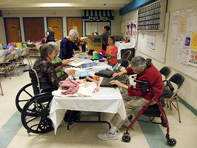

|
 |
|  |
 |
Mary Jo's Experience:
When I first joined Gift Givers Anonymous and helped distribute gifts to unsuspecting receivers I was a bit apprehensive about approaching strangers. I thought, “If anyone approached me in such a way, I would probably take a step back or keep walking.” After watching Kalei approach people with a big smile, kind and comforting words, I thought, “I can do this.” So I did. The more I handed gifts the more comfortable I became. The more comfortable I became the more I watched the people I approached relax.
Watching people’s reactions when we handed them a gift for no reason, other than to spread some gifts of Kindness was pure JOY! The excitement on the people’s faces at getting something gifted to them wrapped in colorful paper or a festive bag, WOW!!
If you were to ask me which person affected me the most it would be the woman I saw ringing the bell for the Salvation Army bucket donations outside a Wal-Mart. She was the cheeriest bell ringer I had ever seen! She wore a hat with a light blinking Christmas tree on it. I was drawn to her unabashed smile, warm cheery words of the season for everyone who passed her by. When I gave her a gift she was so excited! We hugged. It dawned on me that I may have made an impact on this person! What a euphoric feeling. To think that this, simple act of giving made one woman ecstatic is truly heart-warming and humbling.
I’m hooked! I have to continue being involved in this project in any way possible – giving, buying items to donate, wrapping, organizing, distributing, or taking pictures of the givers & receivers. Check out the pictures from last year (2012) when we had three generations involved in wrapping and two generations involved in giving. What great energy, teamwork and fun we all had.
To think, the 1st year we had 10 gifts to give, the 2nd year we had 20 gifts to give and December 2012 (year 5) we had over 100 gifts we gave out. That is amazing! This year, the project has grown so phenomenally that storage space had to be rented to hold all the items and gift wrapping that people have been so generous in donating, and it is busting at the seams. Just imagine all the people that are going to be blessed and touched by the kindness of strangers. Will you be one of those strangers who join us in making this a movement with ramifications that ripple through Albuquerque and beyond?
Mary Jo Moeller
Albuquerque, NM--------